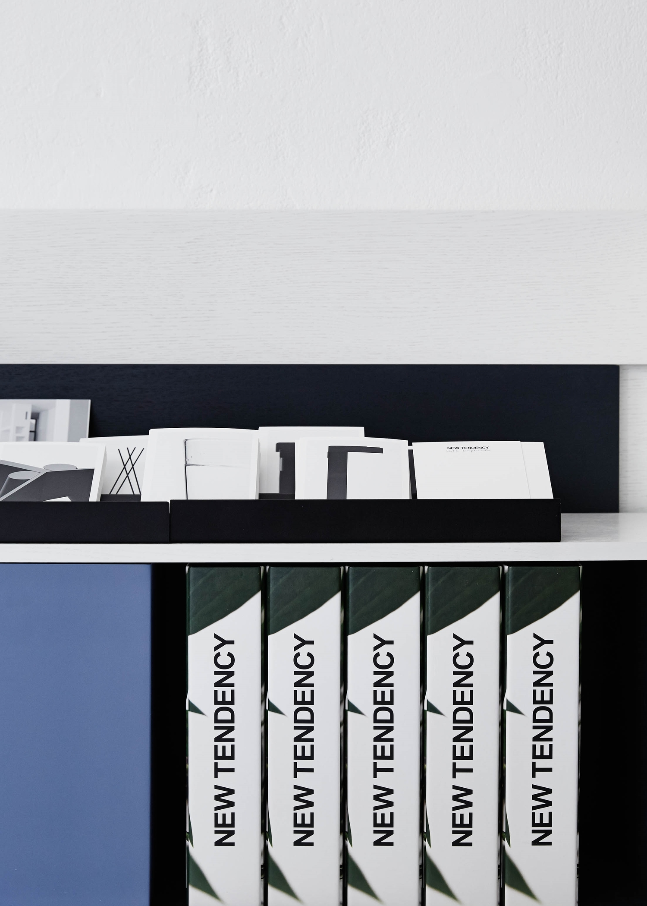
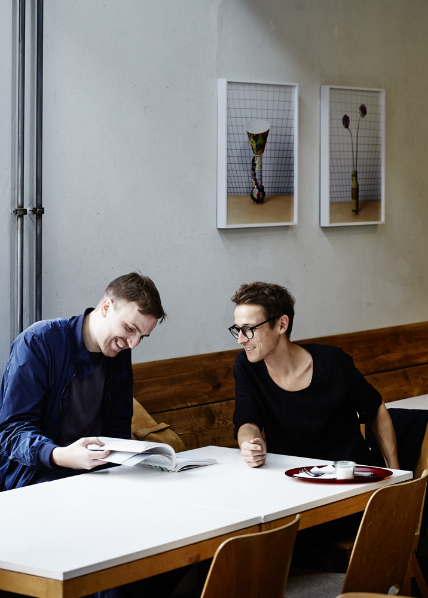
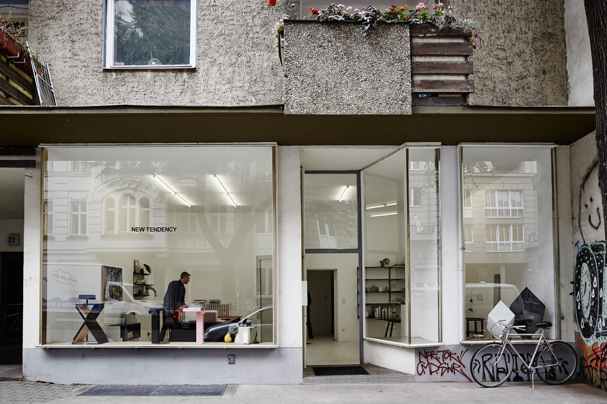
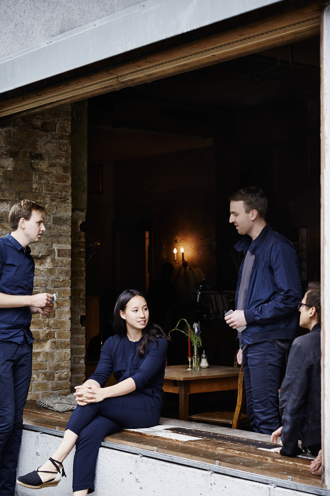
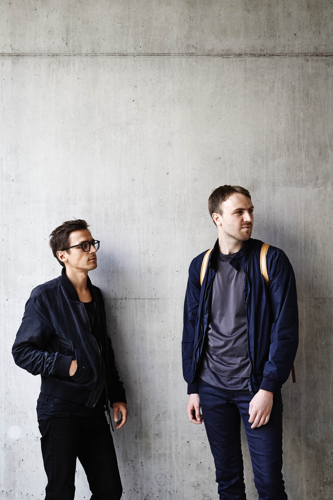
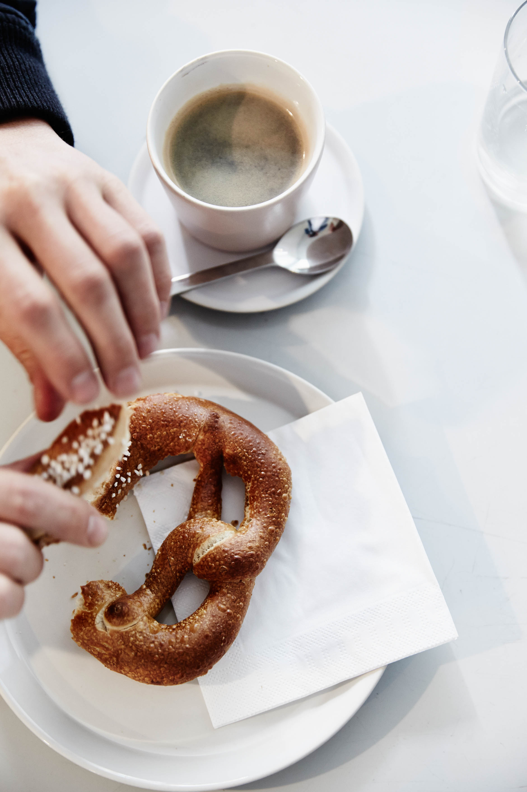

<!DOCTYPE html><html lang="en"><head><meta charset="UTF-8"><meta name="viewport" content="width=device-width, initial-scale=1.0"><meta http-equiv="X-UA-Compatible" content="ie=edge"><link rel="preconnect" href="https://fonts.gstatic.com/" crossorigin="crossorigin"><link rel="stylesheet" href="https://fonts.googleapis.com/css?family=EB+Garamond:500,700|Play:700&amp;display=swap"><link rel="stylesheet" href="main.20e32698.css"><title>Charm</title></head><body></body></html><header class="header new-tendency"><nav><ul class="header__nav"><li><a class="header__logo" href="index.html">Charm</a></li><li class="header__nav-item"><a href="index.html">Work</a></li><li class="header__nav-item"> <a href="gallery.html">Gallery</a></li><li class="header__nav-item"> <a href="info.html">Info</a></li></ul></nav></header><main class="main new-tendency"><section class="section1"> <figure class="section1__img1"><figcaption><h2 class="image-heading image-heading--lg">New Tendency</h2><h4 class="image-type">Editorial</h4></figcaption></figure></section><section class="section2"><blockquote class="section2__quote quote"><p class="quote-text">Manuel Goller and Sebastian Schönheit believe in constantly redefining the norm and crafting fresh modes of thinking—which is why they decided to name their design studio New Tendency. Kinfolk magazine spoke to the co-founders of the Berlin-based practice about the importance of collaboration when designing timeless objects. From Kinfolk's Design Issue.</p><p class="quote-text quote-text--end">Kinfolk is a lifestyle magazine published by Ouur. Founded in 2011, Kinfolk is now the leading independent lifestyle magazine for young creative professionals and also produces international editions in Japan, China, Korea and Russia. </p></blockquote></section><section class="section3"><div class="section3__img1"></div><div class="section3__img2"></div></section><section class="section4"><div class="section4__img1"></div></section><section class="section5"><blockquote class="section5__quote quote"><p class="quote-text quote-text--end">“Our work is based on the topology of everyday objects. The user’s need becomes the essence of our creations.” – Manuel Goller</p></blockquote><div class="slider" id="main-slider"><div class="slider-wrapper"></div></div></section><section class="section-credits"><h4 class="section-credits__heading">Credits</h4><p class="section-credits__text"><span class="cursive">Photographer</span> Anders Schønnemann, <span class="cursive">Writer</span> Mary Stutzman, <span class="cursive">Art Director</span> Anja Verdugo, <span class="cursive">Creative Director</span> Nathan Williams, <span class="cursive">Editor</span> Georgia Frances King</p></section></main><footer class="footer"> <ul class="footer__contacts"><li><ul><li> Developed by Sergey Zakharov</li><li> 2019</li><li> Designed by Ouur Media</li></ul></li><li><ul><li> <a href="mailto:zakharov.nsg@gmail.com">zakharov.nsg@gmail.com </a></li><li> <address>Russia, Yekaterinburg</address></li><li><a href="https://www.instagram.com/ouur/" target="blank">Instagram </a></li></ul></li></ul></footer><script src="slider.35d3355b.js" defer></script>